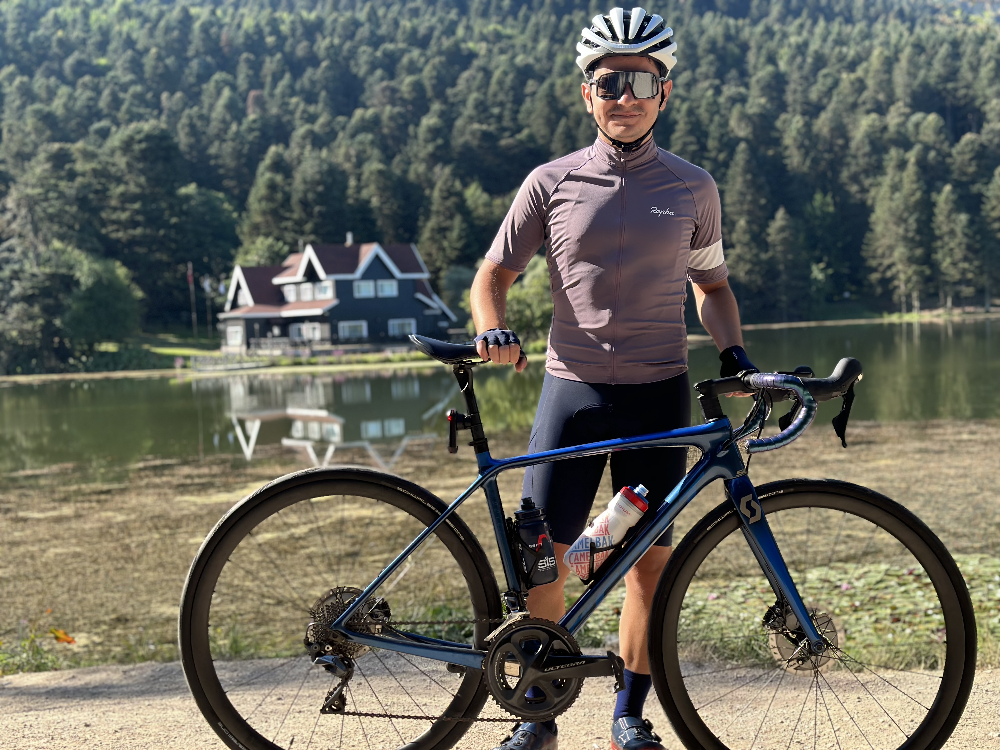
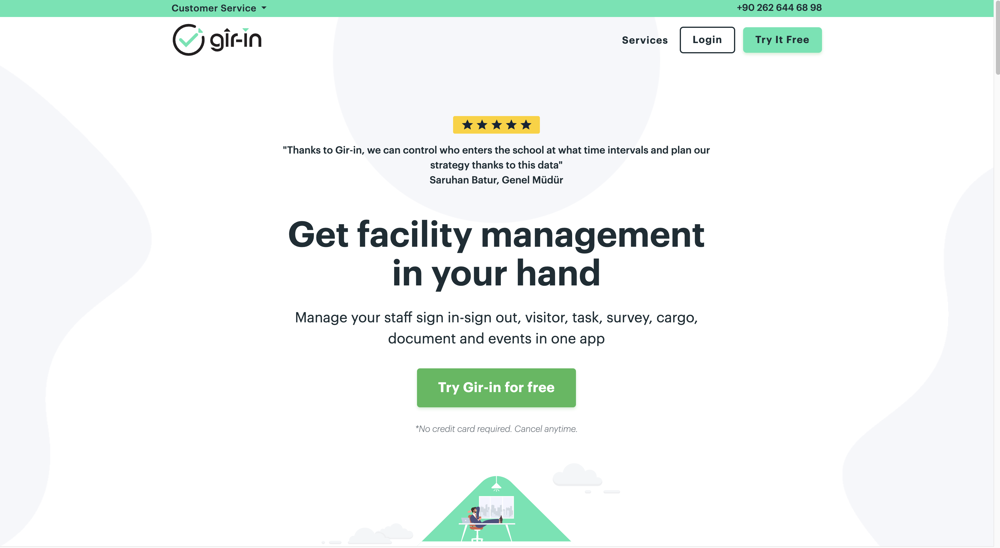

Merhaba, ben Ahmet, 1999 Zonguldak doğumluyum. Sakarya Üniversitesinde bilgisayar mühendisliği okuyorum. Kitap okumaktan, video izlemekten, kahve içmekten çok hoşlanırım. En büyük hobim ise bisiklete binmek. Uzun bisiklet turları yapmayı ve bisiklet sporu ile uğraşmaktan çok keyif alırım.
Yaklaşık 3 yıldır bir yazılım şirketinde çalışıyorum. Okulumun henüz bitmemesine rağmen iş hayatına atıldım. Şirketimizde bir çok projede yer aldım. Bu projelerin bazıları web tabanlı, bazıları ise mobil uygulama tabanlıydı. Yazılımda abstract şeyleri sevdiğim için genellikle backend tarafında yer alıyorum. Ancak frontend tarafında da kendimi geliştirmeye çalışıyorum. Sektöre erkenden atılmak benim için çok büyük bir avantaj oldu. Çünkü şu an iş hayatında ne yapmam gerektiğini çok iyi biliyorum. Şu an şirketimizdeki büyümekte olan girişimimiz Gir-in'de lead developer olarak çalışmalarıma devam etmekteyim.
